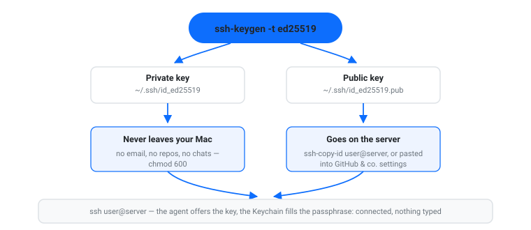
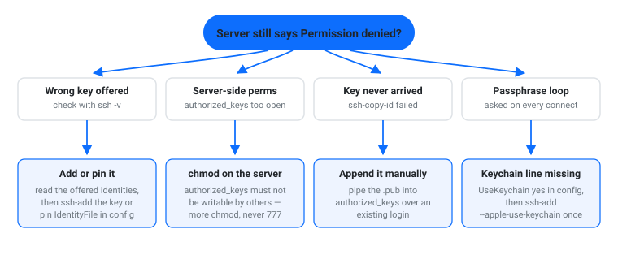

SSH Keys on Mac: Generate, Store, and Use Them (2026)
Passwords are how servers get hurt — brute-forced, reused, leaked. The better login is a pair of files: the ssh keys Mac generates natively with one command, a private file that never leaves your machine and a public half you paste onto any server. On macOS the whole workflow is built in — ssh-keygen to create the pair, an agent that holds it, and a Keychain that remembers your passphrase. This guide covers generating the pair, installing the public half, storing the passphrase, the ~/.ssh/config file that ties keys to hosts, and what to check when a server still answers Permission denied.
The short answer
- One key for everyday servers:
ssh-keygen -t ed25519, accept the default path, set a passphrase. Done in under a minute. - Install it on a server:
ssh-copy-id user@server— or paste the.pubfile into a service’s settings (GitHub, GitLab, your VPS provider). - Type the passphrase once, ever:
ssh-add --apple-use-keychainplusUseKeychain yesin~/.ssh/config. macOS-specific, built in. - Keys plus hosts, minus typing: a
Hostblock in~/.ssh/configpins the right key, user, and hostname to a name you can type.

Step 1: Generate the key pair with ssh-keygen
Open Terminal and run:
ssh-keygen -t ed25519 -C "you@your-mac"
Accept the default location (~/.ssh/id_ed25519) and set a passphrase. You now have two files:
~/.ssh/id_ed25519— the private key. It never leaves your machine: no emailing it, no committing it to a repo, no pasting it into a chat.~/.ssh/id_ed25519.pub— the public half. This is the one you put on servers and paste into services. It can’t be used to log in as you.
On the key type: ed25519 is the right default for new keys — short, fast, and modern. Reach for RSA (ssh-keygen -t rsa -b 4096) only when a genuinely old server refuses everything else. Hardware-backed keys (-t ed25519-sk, FIDO security keys) exist too and macOS’s OpenSSH supports them; they’re worth knowing about, not needed on day one. The full option list is in the ssh-keygen manual.
Step 2: Put the public key on the server
For a server you log into over SSH, one command installs it:
ssh-copy-id user@server
That appends your public key to ~/.ssh/authorized_keys on the server — the file of public keys that are allowed to log in as that user. ssh-copy-id ships with macOS, so there’s nothing to install.
For services that take a key instead (GitHub being the obvious one), you paste the public half into the settings page: pbcopy < ~/.ssh/id_ed25519.pub puts it on your clipboard, and GitHub’s guide to adding an SSH key walks the rest. Same shape everywhere: the service wants the .pub file, never the private one.
Step 3: Let the Keychain remember the passphrase
A passphrase protects the private key if the laptop is stolen — but typing it on every connection is what makes people skip it. macOS closes that gap. Add the key to the agent with the Keychain flag:
ssh-add --apple-use-keychain
--apple-use-keychain is an Apple addition to ssh-add: each passphrase is stored in the user’s keychain (the flag and its companion --apple-load-keychain, which loads identities using passphrases already in the Keychain, are documented on your Mac’s own man ssh-add page). To make every future ssh run look in the Keychain too, add one line to your ~/.ssh/config:
Host * UseKeychain yes
Per Apple’s ssh_config man page, UseKeychain controls whether the system searches for passphrases in the keychain when using a key — and offers to store them when you type one. ssh-add -l lists what the agent currently holds.
The ssh config file on Mac: where keys meet hosts
The config file lives at ~/.ssh/config (create it if it’s not there). Its job in a keys workflow: pin the right key to the right host so you never think about it again.
Host gpu HostName gpu.lab.university.edu User mkarim IdentityFile ~/.ssh/id_ed25519 IdentitiesOnly yes UseKeychain yes
Now ssh gpu connects with that user and that key — and because IdentitiesOnly yes is set, SSH offers only the key you named for that host instead of every key in the agent. That’s the fix for the classic “too many auth failures” error on servers that hang up after a handful of wrong offers. A different key for a different host is the same block with a different IdentityFile.
The config file is also where a wider setup gets pleasant — aliases, keep-alives, port forwards. That’s a separate topic with its own guide: SSH client on Mac walks the whole file; this section covers only the key-related lines.
One permission rule matters the day you create the file: SSH is strict about ~/.ssh. Private keys and the config file want chmod 600, and the directory itself chmod 700 — read/write for you, nothing for anyone else.
When a server still says Permission denied
Key auth fails for one of a few checkable reasons:
- Wrong key offered. Run
ssh -v user@serverand read the lines that say which identities are being offered. If your new key isn’t in the list, add it to the agent (ssh-add ~/.ssh/id_ed25519) or pin it withIdentityFilein the config. - Server-side permissions. OpenSSH’s server refuses a user’s
authorized_keysoutright when the file,~/.ssh, or the home directory are writable by others — the man page’s own wording is that sshd “will not allow it to be used unless the StrictModes option has been set to ‘no’”. The fix is on the server, and it’s morechmod, neverchmod 777. - The key never made it.
cat ~/.ssh/id_ed25519.pub | ssh user@server 'cat >> ~/.ssh/authorized_keys'is the manualssh-copy-idwhen that tool can’t reach a host. - Passphrase prompt loop. If SSH keeps asking for the passphrase, the Keychain line from Step 3 is missing —
UseKeychain yesin the config plusssh-add --apple-use-keychainonce.

If you tunnel daily: the part I built
Full disclosure: I make a tool in this space. TunnelMate is a menu-bar SSH tunnel manager for macOS — local and reverse port forwarding without the terminal. To be plain about scope: it doesn’t generate keys; your key setup above stays the source of truth. What it adds is driving the same system ssh underneath, so everything you just configured works with it — your ~/.ssh/config, your keys, your agent. It imports endpoints from ~/.ssh/config so there’s nothing to re-enter, stores passwords and passphrases in the macOS Keychain (never in config files, and logs are scrubbed), supports password, key, or ssh-agent authentication, and shows a health-checked “Connected” state with automatic reconnect after sleep — with a host key review sheet before a new server is trusted. It can even share a service from your Mac at a port on your server (a reverse tunnel), health-checked the same way. $9.99 one-time on Gumroad, macOS 14+, signed and notarized. If you only forward a port once a month, the terminal command is the right tool; if the laptop sleeps daily, that gap is the product.

Which ssh keys Mac setups you actually need — quick chooser
- One laptop, a few servers: one ed25519 key,
ssh-copy-idper server, Keychain line in the config. Ten minutes, forever solved. - Work server + personal server + git host: three keys, one
Hostblock each withIdentityFileandIdentitiesOnly yes— a leaked or revoked key then costs one block, not your whole setup. - A server that forgot your key:
ssh -vfirst, server-side permissions second — resist any urge to loosen permissions on the client. - Daily tunnels to those hosts: keys in place once, then TunnelMate for the menu-bar connect/reconnect loop.
FAQ
Where are SSH keys stored on Mac?
In ~/.ssh/ in your home folder — by default id_ed25519 (private) and id_ed25519.pub (public) for an ed25519 key. Older RSA pairs use id_rsa / id_rsa.pub.
ed25519 or RSA for a new key?
ed25519. It’s the modern default: small, fast, and accepted by current servers and services. Use RSA 4096 only for old systems that don’t recognize anything newer.
Do I really need a passphrase on the key?
Yes. The passphrase protects the private key file itself — if your Mac is lost, a key with no passphrase is usable by whoever holds it. With --apple-use-keychain and UseKeychain yes, you pay for that protection by typing the passphrase once, ever.
How do I copy my SSH public key to a server?
ssh-copy-id user@server does it in one command; the manual version appends the .pub file’s contents to ~/.ssh/authorized_keys on the server. Services like GitHub take the same public half pasted into their settings page.
Can I reuse one SSH key on every server?
You can, but separate keys per context (personal, work, git host) mean one revoked key or one compromised host doesn’t touch the rest — and ~/.ssh/config makes the extra keys free to manage.
TunnelMate drives the system ssh you just configured — menu-bar tunnels that health-check before “Connected” and reconnect after sleep. Local and reverse port forwarding, $9.99 one-time, macOS 14+, signed and notarized.
Muhammad Karim writes about on-device and local-first software and builds TunnelMate, a menu-bar SSH tunnel manager for macOS that drives the system ssh. Reach him at karim@mkarim.us.